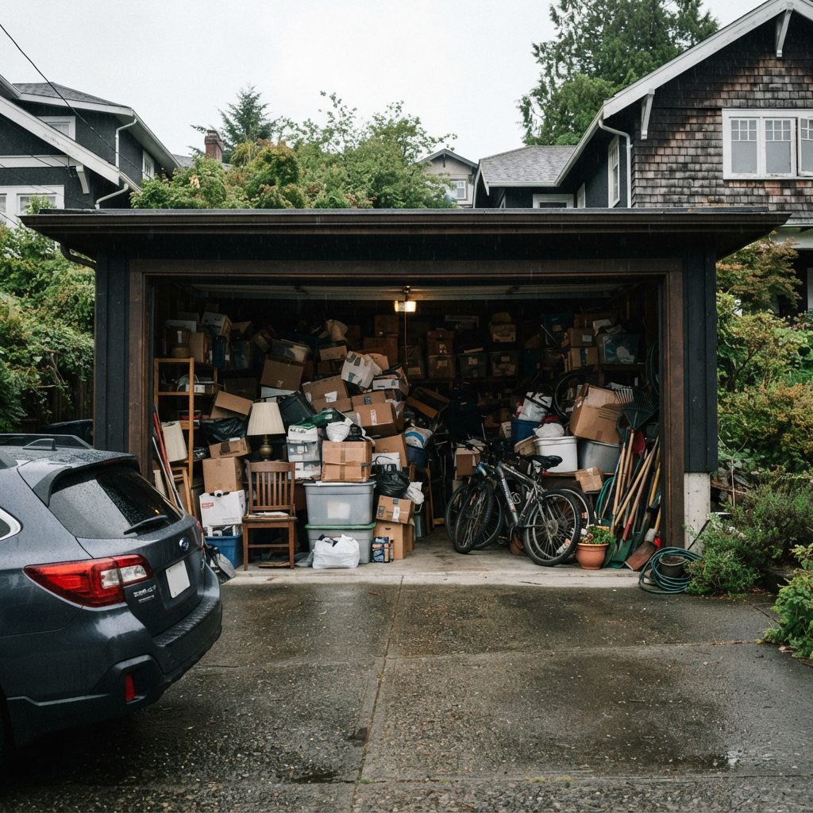
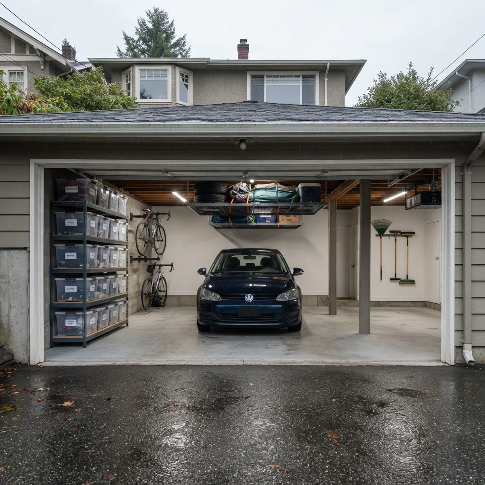

We empty the garage with you, item by item. Paint, tires, batteries and old electronics go to free depots, usable things go to donation, and only the rest rides to the landfill. You get the dump receipts and a swept floor. Text us photos of the garage and we'll send a quote.


Example photos, not a specific Calgary job. The goal in Calgary is usually the same one: the car back inside before the next hailstorm or the next minus-30 morning.
Search "garage cleanout Calgary" and you get four different businesses selling four different things under the same name: driveway bins, hourly helpers on an app, junk trucks priced by how much of the truck you fill, and full-service cleanout crews like us. Each one is the right answer for somebody. Here is how they compare on the questions that decide it.
| Bin on the driveway | Hourly helper | Junk truck | Full cleanout | |
|---|---|---|---|---|
| How it's priced | Per bin, by size and days | Per hour | By how much of the truck you fill | Per job, quoted from photos or a visit |
| Who decides what goes | You | You, as they work | You, before they arrive | You, with a crew sorting beside you |
| Who carries it | You | The helper | The crew | The crew |
| Paint, propane, tires, fridges | Usually refused; separate trips | Depends on the person and their vehicle | Some taken, some refused, some extra | Routed to the right depot as part of the job |
| Donations | Your trip | Sometimes | Some companies donate | Dropped off for you |
| Garage at the end | Empty, if you finished | Whatever got done in the hours booked | Empty where you pointed | Empty and swept |
| Best for | Renovation debris, a free weekend, strong friends | A light garage you mostly sorted already | A pile you've already decided on | A full garage, a deadline, or a garage that isn't yours |
If your pile is already sorted and sitting by the door, call a junk truck. It will cost you less than we would, and we'll tell you that on the phone. The cleanout makes sense when the hard part is the sorting: forty years in one garage, a parent's estate, two households merged into one, or a possession date that leaves no weekend to do it yourself.
Keep it on your own driveway, and leave room to back the car out. Measure the driveway before you order, because many inner-city garages open onto a back lane, and the lane is not your driveway. A bin in the lane or on the street needs a City street use permit ($31.50 a day, applied for at least five business days ahead); our garage cleanout bin or crew page has the details and a cost worksheet. Then check the bin company's refused list against your garage: the paint shelf, the propane cylinders and the old freezer still need their own trips.
Most calls fit one of a handful of situations, and each one changes how we run the job. If yours is on this list, the linked page goes into the details.
Some Calgary neighbourhoods have their own pages because access changes the job: back-lane garages in Mount Royal and Elbow Park, front-drive streets with no lanes in Edgemont and Varsity Estates and in Britannia, Bel-Aire and Mayfair, and the reservoir side of town in Pump Hill and Bayview and in Lakeview, where detached lane garages meet unplowed winter lanes. Closer in, half-duplex garages and rentals around Marda Loop are on our Altadore and Marda Loop page. Outside the city, see Elbow Valley and Heritage Pointe.
This is the part of a cleanout that saves money. The City of Calgary charges by weight at the landfill, and if a load mixes free items with paid ones, the whole load is charged. So we pull the free and the special items out before the truck goes to the scale. Disposal figures below are the City's posted rates, checked in November 2026.
| What's in the garage | Where it goes | Disposal cost |
|---|---|---|
| Half-empty paint cans, stain, aerosols | Household hazardous waste drop-off or a paint recycling depot | Free |
| Used motor oil, filters, oil jugs | Used oil return depot | Free |
| Old TVs, computers, printers | Electronics recycling depot | Free |
| Car and household batteries | Battery return | Free |
| BBQ propane cylinders (under 30 lb) | City household hazardous waste drop-off at participating fire halls | Free |
| RV or vehicle propane tanks | Not accepted at City sites; a metal recycler | Depends on the recycler |
| Residential tires | City landfill | Free |
| Old fridge or chest freezer | City landfill, refrigerant removed | $17 per item plus weight |
| Bikes, tools, sporting goods, furniture that still works | Calgary donation and reuse groups | Free |
| Scrap metal, broken mowers, old shelving | Metal recycler | Free, sometimes paid for |
| Bottles and cans | Bottle depot | The refund goes back to you |
| Everything else | City landfill (Spyhill, East Calgary or Shepard) | $25 flat under 250 kg, then by the tonne |
Two City rules shape the last trip. Every load has to be tarped and tied down, or the landfill can add a surcharge or turn it away. And all three City landfills are closed on Sundays, so a load filled late on a Saturday can't reach the scale until Monday. Firearms and ammunition are never part of a load; if we find them, the job pauses and you call the Calgary Police non-emergency line at 403-266-1234.
We quote each garage on its own, from photos or a short visit. These are the things that change it, roughly in order of how much they matter:
The quickest way to an accurate number: one photo from the big door, one from each back corner, and a list of anything heavy, flammable or behind a closed cabinet. For the prices other Calgary junk companies advertise, the City landfill fees, and a calculator that turns your garage into truckloads, see garage junk removal cost in Calgary.
We arrive with the truck. The first hour is the walk-through: you show us what stays, and anything you can't decide on goes into a "maybe" corner instead of the truck. Then the garage is emptied one wall at a time onto the driveway, sorted into keep, donate, depot and dump, and loaded. Keep items go back in, against the wall you choose.
Before we leave, you get:
Our hours are Monday to Friday 8 to 6 and Saturday 9 to 4. GarageScape carries $2 million in liability insurance, which matters when a crew is carrying a freezer past your car and your neighbour's fence.
If the empty garage is getting new storage next, our garage organization team plans it around what you kept. If the slab needs more than a sweep, see garage floor cleaning or, for coated floors, epoxy floor cleaning.
Winter is a good time to book a cleanout. The spring rush hasn't started, and you get the garage back before the melt runs gravel and road salt across the floor. A few Calgary things to plan around:
If you'd rather wait for spring, the spring garage cleanout page covers the gravel, the winter-to-summer gear swap and the free disposal routes that open up in April.
Three photos and your postal code are enough to start. Tell us if there's a date you're working to: a listing, a possession day, a contractor, or a car that needs to be inside before the next cold snap.
A crew empties the garage with you: every item is kept, donated, recycled at a free depot or hauled for disposal, and the floor is swept at the end. Junk pickup only takes away what you point at. A cleanout includes the sorting and the routing, which is where most of the disposal savings come from.
It depends on how much is in the garage, how many keep-or-go decisions there are, heavy items like fridges or a safe, items that need special handling such as propane or old fuel, how far the truck parks from the door, and how soon you need it done. Disposal is set by the City: a load under 250 kg is a flat $25 at a Calgary landfill, heavier loads are charged by weight, and each fridge or freezer carries a $17 refrigerant fee. Send photos and we quote the job before booking.
Treat them as two jobs. The cleanout is quoted on volume, sorting time and disposal. Organization is quoted on the shelving, racks or cabinets you choose for what stays. Doing the cleanout first means you only buy storage for what is left.
For the first hour, ideally yes, so you can walk the crew through what stays and mark anything you have not decided on. After that most owners leave us to it. If you cannot be there at all, mark the keep items with painter's tape and leave us a door code.
Sometimes. A bin is cheaper when you have the time and help to load it yourself and most of the load is ordinary garbage. It gets more expensive when the garage holds things a bin company will not take, like paint, propane, tires or a fridge, because those still need separate trips.
Not while Calgary's Stage 4 outdoor water restrictions are in effect, which began November 4, 2026. We dry sweep and scrape after a cleanout and book a wet floor clean for when the restrictions lift.
Yes. GarageScape carries $2 million in liability insurance.
Send three photos for a free quote. You get the disposal receipts and a list of where everything went.
Serving Calgary, Airdrie, Okotoks, Cochrane and Chestermere, all year.